# --- Core audio & analysis -------------------------------------------------
install.packages(c(
"tuneR", "seewave", "soundgen", "phonTools", # acoustics
"voiceR", # batch extraction + reports
"tidyverse", "data.table", # data wrangling
"caret", "pROC" # modelling / validation
))
# --- Speech-to-text, language & embeddings ---------------------------------
install.packages(c(
"openai", # Whisper STT + LLM + TTS via the OpenAI API
"reticulate", # call Python from R (local Whisper, transformers)
"googleLanguageR", # Google Cloud Speech-to-Text & Natural Language
"text" # transformer text embeddings (Hugging Face)
))
# 'talk' (sibling of 'text') turns recordings into text, audio features, or
# embeddings; install from its repository when needed.Voice Analytics for Behavioral Scientists
From Acoustic Features to Conversational AI Agents (5-Day Workshop)
Course Instructor & Contact:
Prof. Dr. Christian Hildebrand
Full Professor of Marketing Analytics
Executive Director, Institute of Behavioral Science & Technology (IBT-HSG)
University of St. Gallen
Email: christian.hildebrand@unisg.ch
Web: ibt.unisg.ch | Social: LinkedIn Profile
Welcome & Logistics
Welcome to the 5-Day Voice Analytics Workshop at GSERM! This notebook serves as your interactive workspace for the entire course. We will cover the complete pipeline: from loading raw audio and extracting paralinguistic features to transcribing speech via LLMs and designing conversational AI agents.
Let’s start by verifying that your R environment is properly set up and loading all the necessary packages.
Software Setup
We work primarily in R / RStudio with Quarto for reproducible reporting, and reach into Python only through reticulate so that non-Python users never have to leave R.
Install everything once
Loading all packages to the current session
Verify your setup
Run library(tuneR); library(seewave); library(soundgen) with no errors. If that works, let’s load all packages.
# Acoustics & audio
library(tuneR)
library(seewave)
library(soundgen)
library(phonTools)
# Batch feature extraction & reporting
library(voiceR)
# Speech-to-Text
library(openai)
library(googleLanguageR)
# Data wrangling & analyses
library(tidyverse)
library(data.table)
library(caret)
library(pROC)
library(reticulate)
library(text)Day 1: Foundations & Audio Workflows
Learning goals
By the end of Day 1, participants can:
- explain why voice is a behavioral data layer rather than merely an input channel;
- distinguish acoustic observations from psychological constructs;
- read, inspect, listen to, edit, and save WAV files in R;
- produce oscillograms, pitch tracks, formant plots, and spectrograms;
- develop your capstone idea we work toward in this course.
Why voice data matters
Voice can reveal information that surveys, click data, and raw text often miss:
- affective arousal in real time;
- hesitation, uncertainty, and cognitive load;
- prosodic stance, dominance, and confidence;
- interaction breakdowns and repair;
- social and linguistic context;
- human responses to AI agents.
Theoretical Foundations
Clicks, search terms, and retrospective surveys capture conscious decisions, but they often fail to capture real-time emotional fluctuations, cognitive load, or authentic visceral reactions. Paralinguistic features (how something is said, independent of the semantic text) provide a direct, physiological window into the speaker’s emotional state, stress levels, confidence, and personality. In what follows, I provide a very brief overview of the main fields and theoretical foundations.
Linguistics
Linguistics studies the structure and use of language. For this course, the most useful parts are:
- Phonetics: how speech sounds are produced, transmitted, and perceived.
- Phonology: how sound categories work in a language.
- Semantics: how words and sentences carry meaning.
- Pragmatics and discourse: how meaning depends on context, interaction, turn-taking, repair, politeness, stance, and intention.
The key lesson here is that speech is not just text with some additional auditory noise but that speech signals in itself carry meaning and provide us with a lens into people’s behavior.
Sociolinguistics
Sociolinguistics studies how language varies across social context, community, identity, power, and setting. It helps behavioral researchers remember that “variation” is not only measurement error. Accent, register, politeness, code-switching, and style shifting can be central to the phenomenon.
Sociophonetics
Sociophonetics connects fine-grained phonetic detail with social meaning. It asks how pitch, vowels, timing, voice quality, accent, and style index identity, stance, group membership, or social context. This matters for voice analytics because the same acoustic cue can reflect emotion, identity performance, health, recording setup, or interaction design. An important insight from sociophonetics is, for example, that various social categories like your socio-economic status, power within a group, ethnicity, etc. are all encoded in the way how you speak and not just what you say.
Speech Production & Anatomy
Beyond these foundational fields, it’s also important to realize that speech is also deeply connected to our physiology. Taller people typically have a lower pitch due to their larger larynx and vocal cords. Speech is broadly speaking produced by a three-step physical system: - Respiration (Lungs): The lungs act as the power source, pushing air upward. - Phonation (Vocal Folds): Air passes through the larynx, causing the vocal folds to vibrate. The rate of vibration determines the Fundamental Frequency (\(F_0\) / pitch). - Articulation & Resonance (Vocal Tract): The vocal tract (mouth, nose, throat) filters the sound wave. Movements of the tongue, lips, and jaw create resonance peaks called Formants (\(F_1\), \(F_2\), \(F_3\)), which characterize vowels.
Note of Caution & Construct Validity
Never jump directly from waveform to construct. Think of it as a sequence:
construct -> mechanism -> expected vocal cue -> feature -> rival explanations -> validation evidence.
Check-in:
Write down one construct from your own research that might appear in voice. Then add one rival explanation that could produce the same acoustic cue.
The signal: From air pressure to R objects
Core vocabulary:
- Amplitude: how far the signal moves from its midpoint; often related to loudness or energy.
- Frequency: cycles per second; pitch is tied to fundamental frequency (
f0). - Sampling rate: how many measurements per second are stored.
- Channel: mono or stereo recording.
- Bit depth: precision of each sample.
- Wave object: an R representation of audio data used by packages such as
tuneR,seewave, orvoiceR.
First Audio Workflow
We will begin with our first practical audio workflow using tuneR and seewave. We will analyze a user interaction where a person gets increasingly frustrated with their Amazon Alexa.
Reading and Playing Sound Files
# Read audio files of the two Alexa commands
cmd1 <- readWave("voiceData/1_alexa/alexa_cmd1.wav")
cmd2 <- readWave("voiceData/1_alexa/alexa_cmd2.wav")
# Inspect the structure of the Wave objects
cmd1
Wave Object
Number of Samples: 102051
Duration (seconds): 2.31
Samplingrate (Hertz): 44100
Channels (Mono/Stereo): Stereo
PCM (integer format): TRUE
Bit (8/16/24/32/64): 16 cmd2
Wave Object
Number of Samples: 137881
Duration (seconds): 3.13
Samplingrate (Hertz): 44100
Channels (Mono/Stereo): Stereo
PCM (integer format): TRUE
Bit (8/16/24/32/64): 16 # Play the audio file (eval=FALSE is used here to avoid hanging during rendering)
# listen(cmd1)
Important Note For Mac Users
If listen() throws a “Permission denied” error, point tuneR at the system player: tuneR::setWavPlayer('/usr/bin/afplay').
Calling the two sounds objects shows that they share identical sampling rates, channel numbers, and bit rates. However, we already see differences in duration, with the second sound file being 820 milliseconds longer than the first, something we further explore later when testing specific differences at the feature level.
Note that the listen() function has an f argument, providing the options to directly manipulate the sampling frequency rate (while listening; not of the raw data).
listen(cmd1, f=cmd1@samp.rate*1.1)listen(cmd1, f=cmd1@samp.rate/1.1)Visualizing Waveforms & Spectrograms
An oscillogram displays amplitude (loudness) over time. A spectrogram displays frequency over time, with color intensity indicating amplitude. Let’s take a look at the breaks in the speech signal between commands. What do you think they reveal about the person?
# Plot oscillograms comparing the two commands
par(mfrow = c(2, 1))
oscillo(cmd1, colwave="black", title = "First Command Waveform")
oscillo(cmd2, colwave="blue", title = "Second Command Wavefolisten(rm")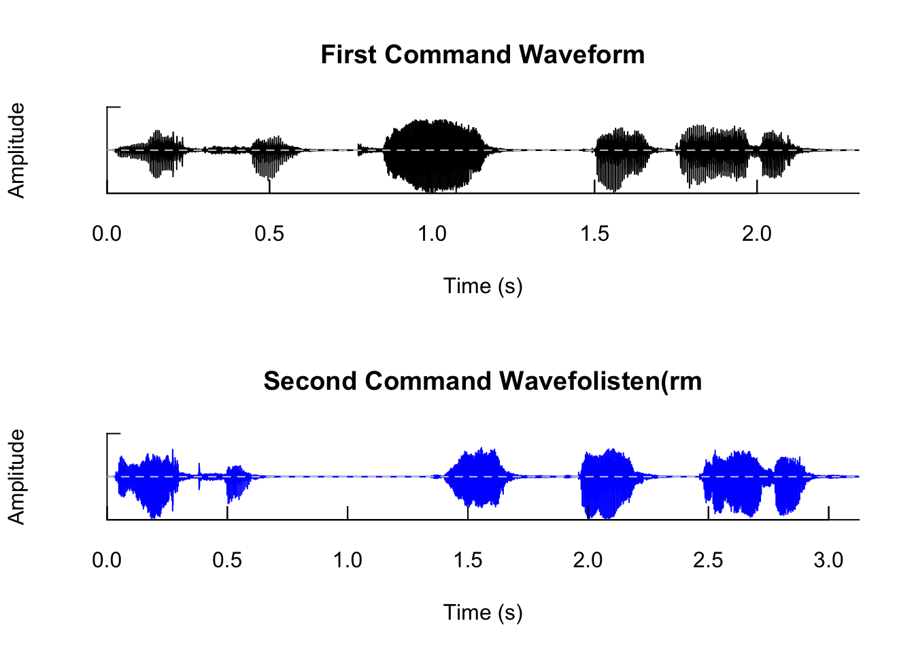
The spectro() function by default only plots the frequency signal over time. With additional arguments to the function, we can further adjust the plotting range and also add a separate oscillogram on the bottom of the spectogram.
# Plot spectrogram of the first command
spectro(cmd1)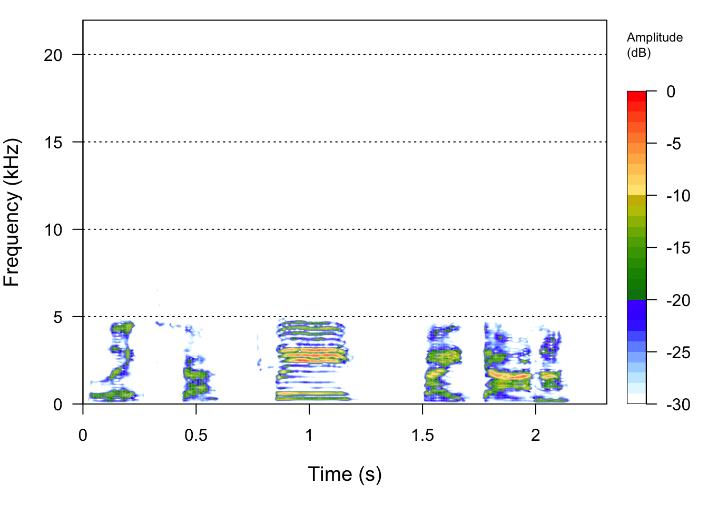
# Plot spectrogram of the first command
spectro(cmd1, flim=c(0, 6), osc=TRUE, dB="max0")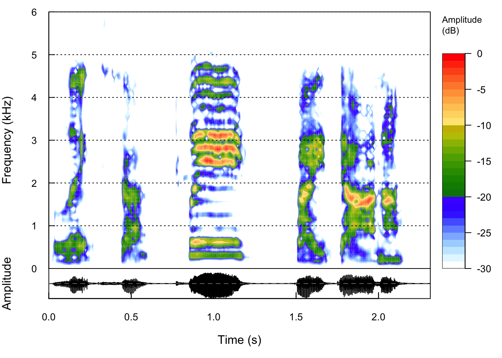
Exercises
Repetition: Read, plot, listen
- Load
alexa_wakeword_1.wav,alexa_wakeword_2.wav, andalexa_wakeword_3.wav; compare their durations. - Plot an oscillogram and a spectrogram for each.
listen()to them. Which sounds more frustrated, and which visual cue tipped you off first?
Now additional practice and extension. Let’s concatenate the three wake-words using the bind() function, plot the concatenated waveform and spectrogram, and fit a linear model to the fundamental frequency contour using fund().
# Load the wakewords
w1 <- readWave("voiceData/1_alexa/alexa_wakeword_1.wav")
w2 <- readWave("voiceData/1_alexa/alexa_wakeword_2.wav")
w3 <- readWave("voiceData/1_alexa/alexa_wakeword_3.wav")
# Concatenate wakewords
wake_all <- bind(w1, w2, w3)
# Plot spectrogram
spectro(wake_all, flim=c(0, 6), osc=TRUE, title="All Wakewords Spectrogram")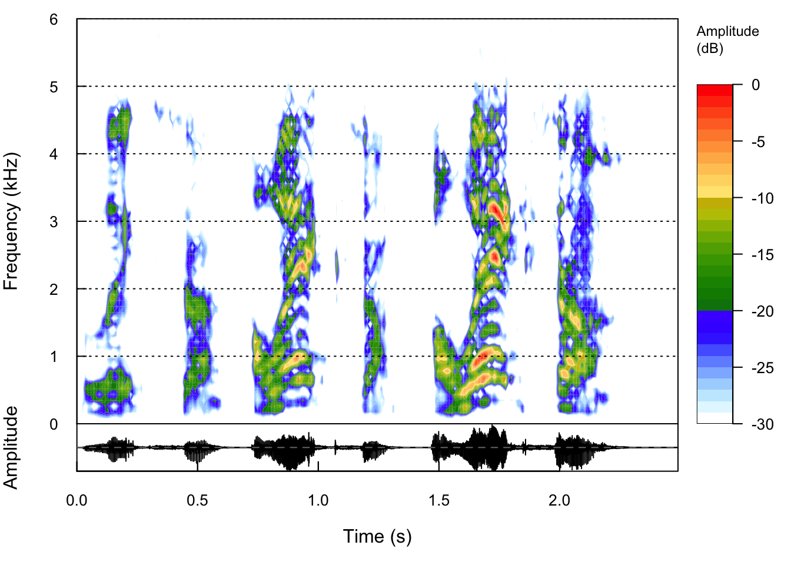
# Extract and plot F0 contour
ff <- fund(wake_all, threshold=1, plot=TRUE)
# Fit linear trend to show pitch change
mod <- lm(ff[, 2] ~ ff[, 1])
abline(mod, col="red", lwd=2, lty=2)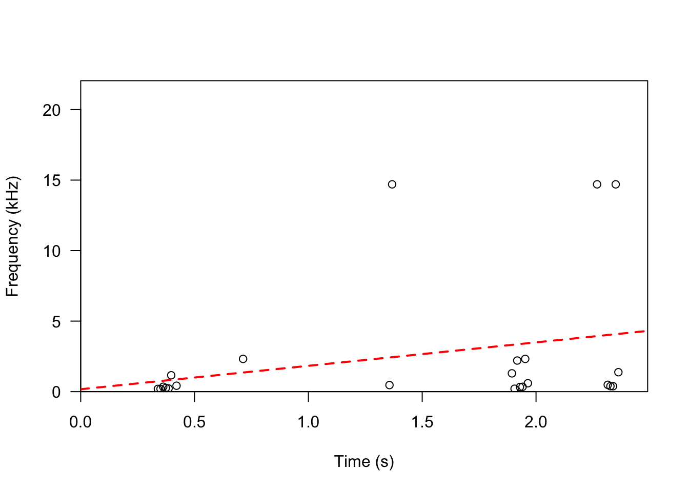
To complete our first day, we can now also save this new object. The seewave package offers the savewav( ) function, designed for storing R sound objects as .wav files.
R Sound Object: As the first argument, designate the R sound object that you intend to save as a .wav file.
Sampling Frequency (
f): Next, specify the sampling frequency.Filename (
filename): Finally, provide the desired filename under which the edited sound object will be stored.
It’s worth noting that if the sampling frequency is not explicitly defined, the seewave package will automatically utilize the same sampling frequency as the edited R object, simplifying the saving process.
savewav(wake_all, filename = "wakewords_combined.wav")
Discussion
- Emotional States: Based on the F0 contour and spectrogram, what acoustic shifts indicate the speaker’s emotional state change across wakewords?
- Reflection: How could this physiological shift be used to automatically detect user frustration in call centers or smart home systems?
Capstone Checkpoint Day 1
Now let’s start to converge toward your own voice project and use the following canvas:
| Prompt | Your answer |
|---|---|
| Research question | |
| Why voice? | |
| Voice role | Independent variable, dependent variable, mediator, moderator, etc. |
| Likely recording context | |
| First feature candidate | |
| Rival explanation | |
| Ethical concerns |
Day 2: Data Collection & Preprocessing
Learning goals
By the end of Day 2, participants can:
- design a recording protocol that supports measurement validity;
- document device, setting, consent, and metadata decisions;
- preprocess audio without overwriting raw files;
- create a reproducible folder structure for voice data.
Recording protocol
Voice data quality is shaped before your analysis starts:
- microphone type and placement;
- room acoustics and background noise;
- file format, codec, sampling rate, and channel;
- task instructions and response length;
- participant language, accent, fatigue, privacy, and social context;
- whether the task is scripted, semi-structured, or naturalistic.

Important
Recordings can identify a person. Always obtain informed consent that names voice capture, storage and analysis; under GDPR speech is special-category data. De-identify, restrict access, and pre-specify retention/deletion.
Notes on Recommended Folder Structure in Projects
data/
raw/ # untouched audio
processed/ # trimmed, converted, normalized audio
metadata/ # participant, device, trial, consent
outputs/
features/ # acoustic and linguistic feature tables
transcripts/ # ASR output and quality flags
logs/ # prompts, model responses, errors
reports/ # QMD, HTML, figures, summaries, etc.Preprocessing Pipeline
Preprocessing transforms noisy, raw audio into clean signals suitable for feature extraction. We will look at trimming silence, Voice Activity Detection (VAD), and unvoiced frame filtering using noSilence() and zapsilw().
# Remove leading/trailing silence
cmd1_clean <- noSilence(cmd1)
# Remove all unvoiced frames (gaps between speech) using an amplitude threshold of 1%
cmd1_nosil <- zapsilw(cmd1, threshold=1, plot=FALSE, output="Wave")
# Compare durations
seewave::duration(cmd1)[1] 2.314082seewave::duration(cmd1_nosil)[1] 1.415533# Plot oscillograms comparing the two commands
par(mfrow = c(1, 3))
oscillo(cmd1, colwave="black", title = "Original")
oscillo(cmd1_clean, colwave="blue", title = "No Silence")
oscillo(cmd1_nosil, colwave="green", title = "Remove Unvoiced Frames")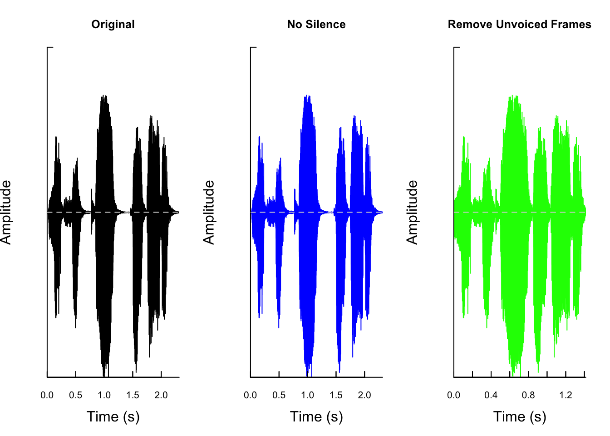
Frequency filtering with fir()
So far we have edited recordings in time (trimming silence, removing unvoiced frames). We can also edit them in frequency. The chunks below use a finite-impulse-response (FIR) filter to keep or drop specific frequency bands, controlled by the from/to range and the bandpass switch:
bandpass = FALSEremoves the band (a band-stop) — here we cut out 3–5 kHz while keeping everything else.bandpass = TRUEkeeps the band — here we keep only 0–4 kHz, which acts as a low-pass that drops the high-frequency content.
We then compare the mean frequency spectra of the original, band-stopped, and low-passed signals with meanspec() to see exactly which energy each filter removed.
# Remove a band, e.g. 3–5 kHz, keep everything else
w3_rmb <- fir(w3, from = 3000, to = 5000, bandpass = FALSE, output = "Wave")# Low-pass: keep <=4 kHz, drop high-frequency content
w3_lpass <- fir(w3, from = 0, to = 4000, bandpass = TRUE, output = "Wave")par(mfrow=c(1,3))
meanspec(w3)
meanspec(w3_rmb)
meanspec(w3_lpass)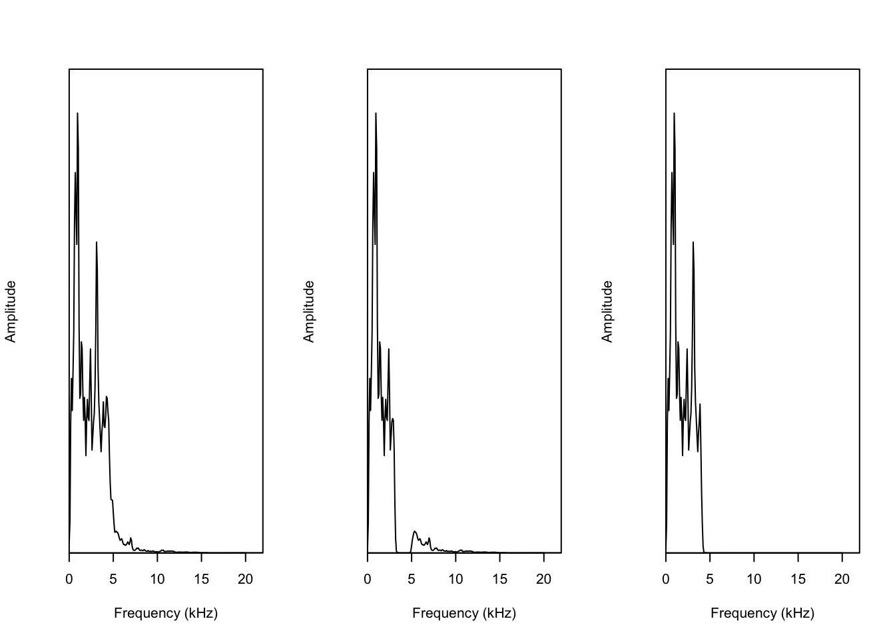
Editing Files & Motivating Feature Extraction
Raw recordings rarely begin at the moment of speech. Both of these clips are exactly 15 seconds, but the speakers start at different times — Obama earlier than Trump. Rather than hardcode those start times, we detect them directly from the audio signal. The lead-in is not true silence either — it contains low-level room noise — so a simple amplitude-based trimmer like noSilence() barely removes anything.
obama <- readWave("voiceData/3_obama_short/obama.srt.wav")
trump <- readWave("voiceData/3_obama_short/trump.srt.wav")We use timer(), which segments a recording into signal vs. pause periods from a smoothed amplitude envelope. The first speech segment’s start time ($s.start[1]) is the onset. The threshold (% of max amplitude counted as “signal”) and msmooth (envelope smoothing window) settings make this robust: smoothing keeps brief noise spikes from registering as spurious early segments.
obama_onset <- timer(obama, threshold = 5, plot = FALSE)$s.start[1]
trump_onset <- timer(trump, threshold = 5, plot = FALSE)$s.start[1]# Visualize the automatically detected speech onsets
par(mfrow = c(1, 2))
oscillo(obama, colwave = "black",
title = paste0("Obama onset ", round(obama_onset, 2), "s"))
abline(v = obama_onset, col = "red", lwd = 2, lty = 2)
oscillo(trump, colwave = "black",
title = paste0("Trump onset ", round(trump_onset, 2), "s"))
abline(v = trump_onset, col = "red", lwd = 2, lty = 2)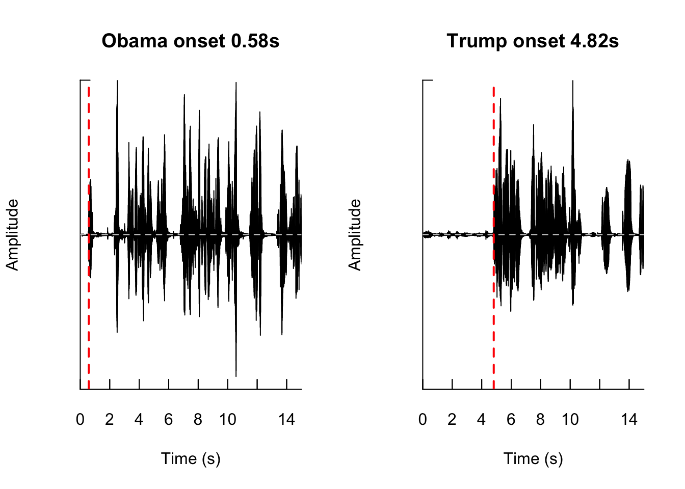
# Cut from the detected onset to the end of the clip (removes the leading silence)
obama_cut <- extractWave(obama, from = obama_onset, to = seewave::duration(obama), xunit = "time")
trump_cut <- extractWave(trump, from = trump_onset, to = seewave::duration(trump), xunit = "time")par(mfrow = c(1, 2))
oscillo(obama_cut,title="Obama Cut")
oscillo(trump_cut,title="Trump Cut")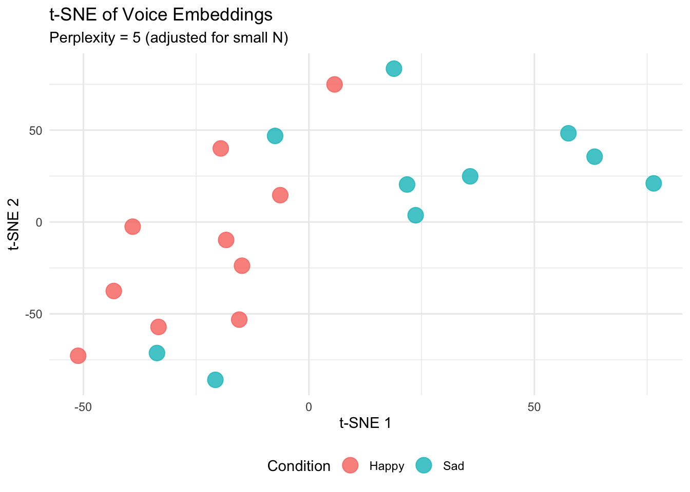
Application 1
Now, let’s write a loop that reads all the WAV files in the microphone test directory voiceData/8_micTests/, removes leading/trailing silences, normalizes the amplitude, and plots the cleaned waveforms.
# Path to mic tests
mic_dir <- "voiceData/8_micTests/"
mic_files <- list.files(mic_dir, pattern = "\\.wav$")
# Process first 3 files as a demonstration
for(i in 1:min(4, length(mic_files))) {
file_path = file.path(mic_dir, mic_files[i])
wav_obj <- readWave(file_path)
# Clean leading/trailing silence
cleaned_wav <- noSilence(wav_obj)
# Plot
oscillo(cleaned_wav, title = paste("Cleaned:", mic_files[i]))
}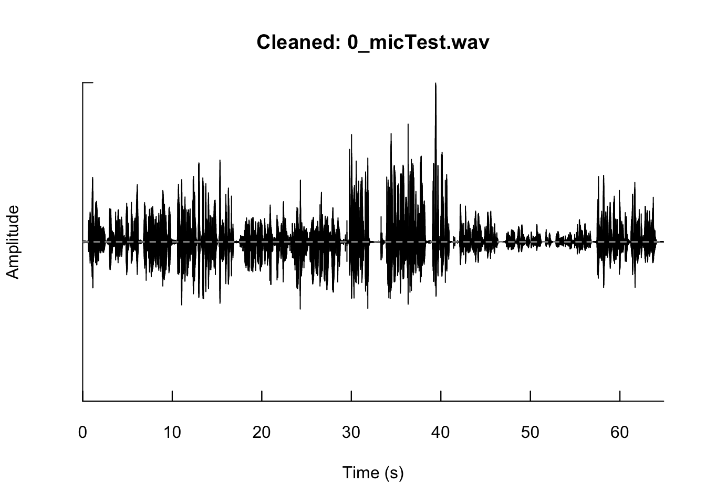
This took quite a lot of time to display this graphic, you may set 'fastdisp=TRUE' for a faster, but less accurate, display

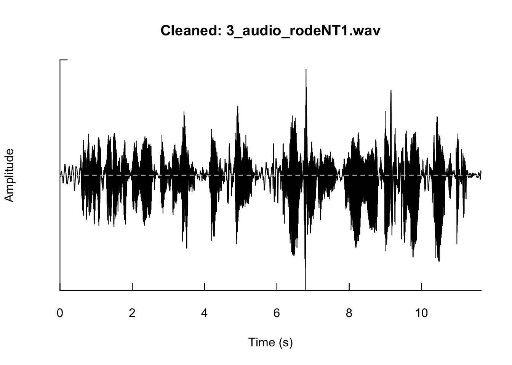
Application 2
Now, let’s move to the “I go to the bar” corpus where each speaker said the same sentence once happy and once sad (a paired design that controls for speaker).
Batch-read and parse metadata from filenames
Filenames follow ID_Emotion_Bar.wav. The chunk below uses base R, to demonstrate the parsing logic and building toward a processed dataset.
files <- c("spk01_Happy_Bar.wav", "spk01_Sad_Bar.wav",
"spk02_Happy_Bar.wav", "spk02_Sad_Bar.wav")
audioDat <- data.frame(file = files, stringsAsFactors = FALSE)
audioDat$user_id <- gsub("^(.+)_(Happy|Sad)_Bar\\.wav$", "\\1", audioDat$file)
audioDat$emotion <- gsub("^.+_(Happy|Sad)_Bar\\.wav$", "\\1", audioDat$file)
audioDat file user_id emotion
1 spk01_Happy_Bar.wav spk01 Happy
2 spk01_Sad_Bar.wav spk01 Sad
3 spk02_Happy_Bar.wav spk02 Happy
4 spk02_Sad_Bar.wav spk02 SadIn your own project, you would list the directory first and then apply the above:
emo_dir <- "voiceData/7_BRM_paper_data/"
emo_files <- list.files(emo_dir)
audioDat <- data.frame(file = emo_files, stringsAsFactors = FALSE)
audioDat$user_id <- gsub("^(.+)_(Happy|Sad)_Bar\\.wav$", "\\1", audioDat$file)
audioDat$emotion <- gsub("^.+_(Happy|Sad)_Bar\\.wav$", "\\1", audioDat$file)
audioDat file
1 5a2900b06a18b8f180655a8081e8b081_Happy_Bar.wav
2 5a2900b06a18b8f180655a8081e8b081_Sad_Bar.wav
3 5b438f516066ad470d3be72c52005251_Happy_Bar.wav
4 5b438f516066ad470d3be72c52005251_Sad_Bar.wav
5 7b7359b711c481311825da58bce2fd5c_Happy_Bar.wav
6 7b7359b711c481311825da58bce2fd5c_Sad_Bar.wav
7 7cbd0ab865aa3b0b913c104b0f914dc1_Happy_Bar.wav
8 7cbd0ab865aa3b0b913c104b0f914dc1_Sad_Bar.wav
9 ab129d98f2aeb19314d46db146460fd1_Happy_Bar.wav
10 ab129d98f2aeb19314d46db146460fd1_Sad_Bar.wav
11 b56bf78533b6a49f6a1f4c9005ca8aac_Happy_Bar.wav
12 b56bf78533b6a49f6a1f4c9005ca8aac_Sad_Bar.wav
13 caad094ef5e48a5de6a8340d7a3ebe1e_Happy_Bar.wav
14 caad094ef5e48a5de6a8340d7a3ebe1e_Sad_Bar.wav
15 cb10480757803ecfccd25c30056baa61_Happy_Bar.wav
16 cb10480757803ecfccd25c30056baa61_Sad_Bar.wav
17 d074376d2783eeb959f2f6c02091264c_Happy_Bar.wav
18 d074376d2783eeb959f2f6c02091264c_Sad_Bar.wav
19 f5f609e4eea5da77f3295ac4da20e023_Happy_Bar.wav
20 f5f609e4eea5da77f3295ac4da20e023_Sad_Bar.wav
user_id emotion
1 5a2900b06a18b8f180655a8081e8b081 Happy
2 5a2900b06a18b8f180655a8081e8b081 Sad
3 5b438f516066ad470d3be72c52005251 Happy
4 5b438f516066ad470d3be72c52005251 Sad
5 7b7359b711c481311825da58bce2fd5c Happy
6 7b7359b711c481311825da58bce2fd5c Sad
7 7cbd0ab865aa3b0b913c104b0f914dc1 Happy
8 7cbd0ab865aa3b0b913c104b0f914dc1 Sad
9 ab129d98f2aeb19314d46db146460fd1 Happy
10 ab129d98f2aeb19314d46db146460fd1 Sad
11 b56bf78533b6a49f6a1f4c9005ca8aac Happy
12 b56bf78533b6a49f6a1f4c9005ca8aac Sad
13 caad094ef5e48a5de6a8340d7a3ebe1e Happy
14 caad094ef5e48a5de6a8340d7a3ebe1e Sad
15 cb10480757803ecfccd25c30056baa61 Happy
16 cb10480757803ecfccd25c30056baa61 Sad
17 d074376d2783eeb959f2f6c02091264c Happy
18 d074376d2783eeb959f2f6c02091264c Sad
19 f5f609e4eea5da77f3295ac4da20e023 Happy
20 f5f609e4eea5da77f3295ac4da20e023 Sad
Discussion
Why is amplitude normalization crucial when comparing recordings from different participants? What errors could arise during the feature extraction phase (e.g. loudness/sone) if normalization is skipped?
Capstone Checkpoint Day 2
Draft a data collection plan:
| Design item | Decision |
|---|---|
| Speaker sample | |
| Recording task | |
| Device and setting | |
| Consent details | |
| Raw/processed storage | |
| Exclusion rules | |
| Open science sharing plan |
Day 3: Feature Extraction & Construct Building
Learning goals
By the end of Day 3, participants can:
- extract acoustic features manually using
soundgenand in batches withvoiceR; - distinguish feature families across time, amplitude, frequency, and spectral domains;
- model paired happy/sad recordings;
- discuss construct validity issues & context effects.
Feature families
| Family | Examples | Behavioral interpretation |
|---|---|---|
| Time | duration, pauses, speech rate, voiced proportion | fluency, hesitation, planning, turn-taking |
| Amplitude | RMS, intensity, loudness, energy | effort, arousal, emphasis, distance |
| Frequency | f0 mean, f0 range, f0 variability | arousal, intonation, uncertainty, gender |
| Spectral / quality | HNR, entropy, jitter, shimmer, formants | voice quality, perturbation, breathiness, health indicator |
Feature Extraction in R
From Editing to Comparable Features
On the raw files, both speakers look identical on the only feature we have so far — duration (15 s vs 15 s). To say anything about how they speak, we need to extract features. But which ones?
A natural first instinct is spectral or pitch features (mean F0, spectral centroid). The problem is that these clips were recorded on different setups, and pitch/spectral measures are sensitive to microphone, gain, and room acoustics — so comparing them across recordings risks measuring the equipment rather than the speaker. (Even with a robust tracker like soundgen::analyze(), we also find that aggressive frame-level de-silencing can itself distort pitch.)
Temporal and prosodic features sidestep this. Speech onset, pause structure, and speaking rate depend on timing, not on amplitude calibration or frequency response, so they stay comparable across very different recording setups. We extract them with timer() (speech-vs-pause segmentation) and soundgen::segment() (syllable-nucleus detection), computed on the full recording so the natural pauses are preserved.
library(tidyverse)
temporal_features <- function(wave, speaker) {
total_dur <- seewave::duration(wave)
tm <- timer(wave, threshold = 5, msmooth = c(400, 0), plot = FALSE) # speech vs pause
seg <- segment(wave) # syllables
speech_time <- sum(tm$s)
n_syl <- nrow(seg$bursts)
tibble(
speaker = speaker,
onset_s = tm$s.start[1],
total_dur_s = total_dur,
speech_time_s = speech_time,
phonation_pct = 100 * speech_time / total_dur,
n_pauses = length(tm$p),
mean_pause_s = mean(tm$p),
n_syllables = n_syl, # acoustic estimate, not a true word count
speech_rate_sps = n_syl / total_dur, # syllables/s incl. pauses
articulation_sps = n_syl / speech_time # syllables/s excl. pauses
)
}
feat <- bind_rows(
temporal_features(obama, "Obama"),
temporal_features(trump, "Trump")
)propNoise set to 0.314; reset manually if neededSNR set to 4.5; reset manually if neededpropNoise set to 0.411; reset manually if neededSNR set to 7.7; reset manually if neededfeat# A tibble: 2 × 10
speaker onset_s total_dur_s speech_time_s phonation_pct n_pauses mean_pause_s
<chr> <dbl> <dbl> <dbl> <dbl> <int> <dbl>
1 Obama 0.572 15 7.35 49.0 45 0.170
2 Trump 4.81 15 6.48 43.2 14 0.608
# ℹ 3 more variables: n_syllables <int>, speech_rate_sps <dbl>,
# articulation_sps <dbl>feat %>%
select(speaker, onset_s, articulation_sps, n_pauses, mean_pause_s, phonation_pct) %>%
pivot_longer(-speaker, names_to = "feature", values_to = "value") %>%
mutate(feature = recode(feature,
onset_s = "1_Speech onset (s)",
articulation_sps = "2_Articulation rate (syl/s)",
n_pauses = "3_Number of pauses",
mean_pause_s = "4_Mean pause (s)",
phonation_pct = "5_Phonation (% of clip)")) %>%
ggplot(aes(speaker, value)) +
geom_col() +
facet_wrap(~ feature, nrow=1,ncol=5,scales = "free_y") +
labs(x = NULL, y = NULL, title = "Temporal/prosodic contrasts: Obama vs. Trump")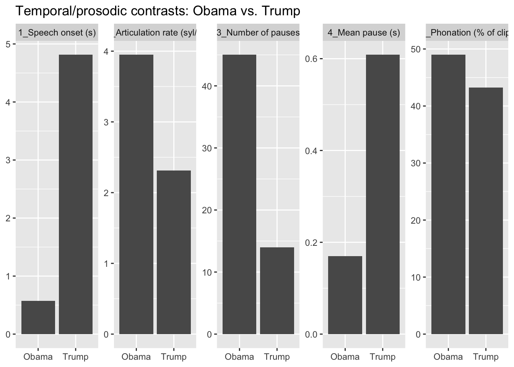
The contrast is clear and, importantly, robust to the recording differences. Obama begins almost immediately and speaks quickly (~4 syllables/s) with many short pauses, while Trump starts several seconds in and speaks more slowly (~2 syllables/s) with fewer, longer pauses. Both fill a similar share of the clip with speech, so the difference lies in pacing and pausing, not in how much they talk.
Two caveats. The syllable count comes from amplitude-based burst detection, so it is an estimate rather than a true word count — true word counts would require automatic speech recognition — though it is reliable enough for a relative comparison under identical settings. And the pause counts depend on the timer() threshold; we use the same value for both speakers so the comparison is fair, but the absolute numbers shift with different thresholds.
Feature Extraction via soundgen
We can extract features manually with soundgen::analyze() or perform automated batch extraction using voiceR::autoExtract().
# Extract features from a single wav file
feat_cmd1 <- analyze(w1, plot = FALSE)
feat_cmd2 <- analyze(w2, plot = FALSE)
feat_cmd3 <- analyze(w3, plot = FALSE)
# Inspect summary features
fcmd1 <- feat_cmd1$summary[, c("duration","pitch_mean","amplVoiced_mean","HNR_mean")]
fcmd2 <- feat_cmd2$summary[, c("duration","pitch_mean","amplVoiced_mean","HNR_mean")]
fcmd3 <- feat_cmd3$summary[, c("duration","pitch_mean","amplVoiced_mean","HNR_mean")]
table <- bind_rows(
fcmd1, fcmd2,fcmd3) %>%
mutate(Type=c("First WK","Second WK", "Third WK"),.before=1)
table Type duration pitch_mean amplVoiced_mean HNR_mean
1 First WK 0.7007256 174.3044 0.07405254 8.334501
2 Second WK 0.7438549 278.6762 0.11284184 6.773517
3 Third WK 1.0457143 292.9051 0.19920445 6.503770Batch Extraction via voiceR
We will load recordings of speakers saying “I go to the bar” from the 7_BRM_paper_data folder and extract vocal features.
The autoExtract() function is the powerhouse of the voiceR package:
Comprehensive Input: It takes our list of wave objects (wav_list) as input
File Format Specification: fileType=“wav” indicates we’re working with WAV audio files
Pattern Recognition: fileNamePattern = “ID_Condition” tells voiceR that our filenames follow a pattern where:
- The first part is an identifier (speaker ID)
- The second part is a condition (Happy or Sad)
Separator Definition:
sep = "_"specifies the underscore as the delimiter between filename componentsParallel Processing:
parallel = TRUEenables multithreading for faster processing of multiple files
# List wav files in the paper data folder
emo_dir <- "voiceData/7_BRM_paper_data/"
emo_files <- list.files(emo_dir)
# Read wave files into a list
wav_list <- list()
for(i in 1:length(emo_files)) {
file_name <- emo_files[i]
wav_obj <- readWave(file.path(emo_dir, file_name))
# Use filename as name
name_key <- gsub("\\.wav$", "", file_name)
wav_list[[name_key]] <- wav_obj
}
# Run autoExtract in voiceR
# (fileNamePattern defines the metadata components in the filename e.g. ID_Condition_null)
voiceR_feats <- autoExtract(
audioList = wav_list,
fileType = "wav",
fileNamePattern = "ID_Condition",
sep = "_",
parallel = TRUE,
extended = TRUE
)
# Inspect the structured feature dataset
str(voiceR_feats)'data.frame': 20 obs. of 113 variables:
$ duration : num 1 0.973 1.162 1.175 1.076 ...
$ Condition : chr "Happy" "Sad" "Happy" "Sad" ...
$ ID : chr "5a2900b06a18b8f180655a8081e8b081" "5a2900b06a18b8f180655a8081e8b081" "5b438f516066ad470d3be72c52005251" "5b438f516066ad470d3be72c52005251" ...
$ file : chr "sound" "sound" "sound" "sound" ...
$ duration_noSilence : num 0.925 0.95 1.1 1.15 1.05 ...
$ voiced : num 0.59 0.757 0.711 0.978 0.5 ...
$ voiced_noSilence : num 0.639 0.757 0.744 1.023 0.525 ...
$ amEnvDep_mean : num 0.169 0.195 0.269 0.202 0.164 ...
$ amEnvDep_sd : num 0.03974 0.00882 0.06799 0.01145 0.02237 ...
$ amEnvDepVoiced_mean : num 0.19 0.195 0.284 0.202 0.156 ...
$ amEnvDepVoiced_sd : num 0.03438 0.00937 0.06614 0.01145 0.01237 ...
$ amEnvFreq_mean : num 71.5 33.7 11.6 36.4 12.3 ...
$ amEnvFreq_sd : num 56.068 26.244 0.785 43.933 1.471 ...
$ amEnvFreqVoiced_mean : num 55 32.2 11.8 36.4 12.1 ...
$ amEnvFreqVoiced_sd : num 51.051 25.164 0.797 43.933 1.642 ...
$ amMsFreq_mean : num 74.4 87.3 150.4 94.6 99.2 ...
$ amMsFreq_sd : num 25.09 8.37 31.11 45.42 25.65 ...
$ amMsFreqVoiced_mean : num 66.4 87.4 163 94.6 105.5 ...
$ amMsFreqVoiced_sd : num 20.3 9.27 20.15 45.42 28.67 ...
$ amMsPurity_mean : num -29.2 -25.3 -45.8 -35.1 -33.8 ...
$ amMsPurity_sd : num 5.83 2.03 6.6 11.2 6.58 ...
$ amMsPurityVoiced_mean : num -28.1 -25.3 -48.8 -35.1 -36 ...
$ amMsPurityVoiced_sd : num 5.24 2.31 2.49 11.2 6.68 ...
$ ampl_mean : num 0.1684 0.0523 0.0909 0.0785 0.0923 ...
$ ampl_sd : num 0.0973 0.0209 0.0453 0.0514 0.0517 ...
$ ampl_noSilence_mean : num 0.1802 0.0523 0.0943 0.0812 0.0958 ...
$ ampl_noSilence_sd : num 0.0918 0.0209 0.0433 0.051 0.0506 ...
$ amplVoiced_mean : num 0.1837 0.0563 0.1065 0.0798 0.0985 ...
$ amplVoiced_sd : num 0.0967 0.0211 0.0411 0.0512 0.0443 ...
$ CPP_mean : num 10.48 11.36 11.62 12.22 9.45 ...
$ CPP_sd : num 2.77 2.41 2.45 2.95 3.11 ...
$ dom_mean : num 137 241 244 220 161 ...
$ dom_sd : num 20.8 68.6 52.7 51.8 49.5 ...
$ domVoiced_mean : num 131 253 259 220 161 ...
$ domVoiced_sd : num 16.1 70.4 50.6 51.8 48.4 ...
$ entropy_mean : num 0.0531 0.0786 0.1061 0.105 0.0688 ...
$ entropy_sd : num 0.0434 0.0539 0.0612 0.0514 0.0477 ...
$ entropySh_mean : num 0.0531 0.0786 0.1061 0.105 0.0688 ...
$ entropySh_sd : num 0.0434 0.0539 0.0612 0.0514 0.0477 ...
$ entropyShVoiced_mean : num 0.0611 0.0773 0.098 0.1039 0.0641 ...
$ entropyShVoiced_sd : num 0.0535 0.0599 0.0422 0.0514 0.0257 ...
$ entropyVoiced_mean : num 0.0611 0.0773 0.098 0.1039 0.0641 ...
$ entropyVoiced_sd : num 0.0535 0.0599 0.0422 0.0514 0.0257 ...
$ f1_freq_mean : num 512 510 721 642 523 ...
$ f1_freq_sd : num 163 280 253 160 273 ...
$ f1_width_mean : num 219 158 222 243 143 ...
$ f1_width_sd : num 137.1 130.2 148.8 142.9 82.6 ...
$ f2_freq_mean : num 1329 1451 1718 1489 1364 ...
$ f2_freq_sd : num 304 498 680 401 470 ...
$ f2_width_mean : num 171 192 262 217 187 ...
$ f2_width_sd : num 120 114 122 142 163 ...
$ f3_freq_mean : num 2436 3077 2984 2697 2596 ...
$ f3_freq_sd : num 499 2735 819 514 499 ...
$ f3_width_mean : num 248 285 201 211 223 ...
$ f3_width_sd : num 127 140 134 123 141 ...
$ flux_mean : num 0.0633 0.1026 0.0717 0.0525 0.113 ...
$ flux_sd : num 0.081 0.1474 0.0955 0.0973 0.1392 ...
$ fmDep_mean : num 0.307 0.235 0.373 0.5 1.017 ...
$ fmDep_sd : num 0.0324 0.05 0.0892 0.1836 0.3897 ...
$ fmFreq_mean : num 6.67 6.67 6.25 5.46 6 ...
$ fmFreq_sd : num 0 0 0.316 0 0 ...
$ fmPurity_mean : logi NA NA NA NA NA NA ...
$ fmPurity_sd : logi NA NA NA NA NA NA ...
$ harmEnergy_mean : num 8.65 10.51 7.25 7.51 6.12 ...
$ harmEnergy_sd : num 3.04 1.77 2.28 2.34 5.14 ...
$ harmHeight_mean : num 1825 1122 2947 2902 1340 ...
$ harmHeight_sd : num 1240 519 1384 2075 962 ...
$ HNR_mean : num 7.37 8.45 9.19 11.41 7.27 ...
$ HNR_sd : num 3.34 3.01 4.22 4.7 2.45 ...
$ HNRVoiced_mean : num 7.37 8.45 9.19 11.41 7.27 ...
$ HNRVoiced_sd : num 3.34 3.01 4.22 4.7 2.45 ...
$ loudness_mean : num 13.2 5.25 9.21 9.33 9.5 ...
$ loudness_sd : num 5.66 1.41 3.23 3.6 4.48 ...
$ loudnessVoiced_mean : num 13.44 5.61 10.28 9.45 9.85 ...
$ loudnessVoiced_sd : num 5.67 1.27 2.94 3.56 4.35 ...
$ novelty_mean : num 0.238 0.202 0.231 0.254 0.194 ...
$ novelty_sd : num 0.1386 0.123 0.0902 0.0733 0.1216 ...
$ noveltyVoiced_mean : num 0.27 0.169 0.235 0.252 0.209 ...
$ noveltyVoiced_sd : num 0.1435 0.1126 0.0853 0.073 0.1311 ...
$ peakFreq_mean : num 431 279 603 451 437 ...
$ peakFreq_sd : num 264 141 309 532 325 ...
$ peakFreqVoiced_mean : num 331 300 693 451 381 ...
$ peakFreqVoiced_sd : num 190 144 300 532 273 ...
$ pitch_mean : num 132.7 89.2 260 220 179.9 ...
$ pitch_sd : num 15.9 9.6 50.1 50.7 87.2 ...
$ quartile25_mean : num 376 261 493 483 344 ...
$ quartile25_sd : num 142.4 67.2 191.5 396.4 155 ...
$ quartile25Voiced_mean : num 306 271 522 483 312 ...
$ quartile25Voiced_sd : num 116.6 62.2 183.8 396.4 145.5 ...
$ quartile50_mean : num 714 544 873 923 594 ...
$ quartile50_sd : num 314 390 481 697 311 ...
$ quartile50Voiced_mean : num 586 565 812 923 491 ...
$ quartile50Voiced_sd : num 287 413 271 697 226 ...
$ quartile75_mean : num 1585 1276 1809 1784 1181 ...
$ quartile75_sd : num 874 1322 1193 1053 802 ...
$ quartile75Voiced_mean : num 1605 1386 1640 1784 1103 ...
$ quartile75Voiced_sd : num 1046 1482 648 1053 621 ...
$ roughness_mean : num 34.5 32.2 31.2 28.4 34.6 ...
$ roughness_sd : num 1.28 2.75 2.87 3.07 4.59 ...
[list output truncated]head(voiceR_feats) duration Condition ID file duration_noSilence
1 1.000454 Happy 5a2900b06a18b8f180655a8081e8b081 sound 0.9246032
2 0.973356 Sad 5a2900b06a18b8f180655a8081e8b081 sound 0.9495918
3 1.161882 Happy 5b438f516066ad470d3be72c52005251 sound 1.0995238
4 1.174762 Sad 5b438f516066ad470d3be72c52005251 sound 1.1495011
5 1.076145 Happy 7b7359b711c481311825da58bce2fd5c sound 1.0495465
6 1.129070 Sad 7b7359b711c481311825da58bce2fd5c sound 1.1245125
voiced voiced_noSilence amEnvDep_mean amEnvDep_sd amEnvDepVoiced_mean
1 0.5897436 0.6388889 0.1694764 0.039744747 0.1900783
2 0.7567568 0.7567568 0.1947727 0.008821231 0.1948765
3 0.7111111 0.7441860 0.2693977 0.067989111 0.2838915
4 0.9782609 1.0227273 0.2020843 0.011445609 0.2020843
5 0.5000000 0.5250000 0.1638650 0.022374763 0.1556076
6 0.8181818 0.8571429 0.1943375 0.017672290 0.1941950
amEnvDepVoiced_sd amEnvFreq_mean amEnvFreq_sd amEnvFreqVoiced_mean
1 0.034381277 71.49223 56.0677061 55.03919
2 0.009370494 33.66478 26.2443939 32.18329
3 0.066138998 11.64074 0.7854308 11.76193
4 0.011445609 36.37513 43.9334760 36.37513
5 0.012365499 12.30248 1.4713141 12.13589
6 0.016907291 15.89533 0.8044775 15.87492
amEnvFreqVoiced_sd amMsFreq_mean amMsFreq_sd amMsFreqVoiced_mean
1 51.0509816 74.37286 25.090021 66.43419
2 25.1637049 87.25001 8.371804 87.40751
3 0.7965515 150.42129 31.107851 163.02166
4 43.9334760 94.58846 45.417562 94.58846
5 1.6415916 99.15777 25.653726 105.46442
6 0.7511898 71.59294 12.235850 70.74545
amMsFreqVoiced_sd amMsPurity_mean amMsPurity_sd amMsPurityVoiced_mean
1 20.297348 -29.22888 5.829161 -28.06955
2 9.267747 -25.31049 2.033378 -25.31680
3 20.146452 -45.79212 6.597114 -48.82459
4 45.417562 -35.12648 11.203621 -35.12648
5 28.670110 -33.83774 6.584903 -36.02453
6 11.738803 -31.88850 2.548964 -31.86642
amMsPurityVoiced_sd ampl_mean ampl_sd ampl_noSilence_mean
1 5.240884 0.16843452 0.09725728 0.18016068
2 2.310781 0.05228454 0.02090604 0.05228454
3 2.492679 0.09085228 0.04531402 0.09431704
4 11.203621 0.07849653 0.05144269 0.08117413
5 6.684606 0.09233120 0.05174001 0.09577204
6 2.587007 0.02792760 0.01795784 0.02902253
ampl_noSilence_sd amplVoiced_mean amplVoiced_sd CPP_mean CPP_sd dom_mean
1 0.09178606 0.18365450 0.09668048 10.484683 2.768123 137.1028
2 0.02090604 0.05633219 0.02110514 11.359794 2.413886 241.2822
3 0.04329317 0.10645168 0.04114281 11.617438 2.453907 243.5300
4 0.05099700 0.07981425 0.05123285 12.216667 2.945709 219.7823
5 0.05058962 0.09846459 0.04430689 9.451174 3.109331 160.7418
6 0.01763929 0.03158600 0.01741558 11.125977 2.282425 116.9334
dom_sd domVoiced_mean domVoiced_sd entropy_mean entropy_sd entropySh_mean
1 20.789060 131.1300 16.057354 0.05310476 0.04344252 0.05310476
2 68.571968 252.5829 70.413851 0.07857337 0.05389073 0.07857337
3 52.677820 259.0120 50.603456 0.10605244 0.06118767 0.10605244
4 51.838498 219.7823 51.838498 0.10502572 0.05141967 0.10502572
5 49.549112 161.2844 48.360616 0.06882506 0.04765530 0.06882506
6 6.554742 115.9110 5.868228 0.13605099 0.07700861 0.13605099
entropySh_sd entropyShVoiced_mean entropyShVoiced_sd entropyVoiced_mean
1 0.04344252 0.06110485 0.05347113 0.06110485
2 0.05389073 0.07733206 0.05994146 0.07733206
3 0.06118767 0.09802900 0.04218878 0.09802900
4 0.05141967 0.10387935 0.05140280 0.10387935
5 0.04765530 0.06413883 0.02573896 0.06413883
6 0.07700861 0.11346918 0.04708936 0.11346918
entropyVoiced_sd f1_freq_mean f1_freq_sd f1_width_mean f1_width_sd
1 0.05347113 512.0225 163.4990 218.5183 137.13173
2 0.05994146 509.5141 279.5666 157.6108 130.20402
3 0.04218878 720.8926 253.0086 221.8272 148.79558
4 0.05140280 641.5130 159.9821 242.8886 142.85472
5 0.02573896 523.0690 272.5694 142.9194 82.63216
6 0.04708936 547.0840 365.4984 162.5903 120.17560
f2_freq_mean f2_freq_sd f2_width_mean f2_width_sd f3_freq_mean f3_freq_sd
1 1329.057 304.1961 170.9844 120.3912 2436.382 499.4023
2 1450.895 498.1282 191.8100 114.1395 3076.995 2735.4222
3 1717.557 680.4154 262.2490 121.7254 2983.701 818.8311
4 1488.531 400.9369 216.9763 141.7109 2697.184 513.7563
5 1363.823 470.2360 186.8681 162.6238 2595.582 498.5033
6 1766.034 1069.7452 272.8162 144.4808 3206.712 1087.7175
f3_width_mean f3_width_sd flux_mean flux_sd fmDep_mean fmDep_sd
1 248.4006 127.1470 0.06327609 0.08101057 0.3072871 0.03243179
2 285.0257 140.0602 0.10263008 0.14744466 0.2349451 0.04998821
3 200.9006 134.3807 0.07173043 0.09551223 0.3733618 0.08919440
4 210.8261 123.4719 0.05246928 0.09725465 0.5001032 0.18359052
5 223.4186 141.4908 0.11301185 0.13923601 1.0172892 0.38970247
6 381.2534 126.7240 0.09242755 0.11992279 0.2463575 0.19071205
fmFreq_mean fmFreq_sd fmPurity_mean fmPurity_sd harmEnergy_mean harmEnergy_sd
1 6.669691 0.0000000 NA NA 8.648823 3.040962
2 6.669691 0.0000000 NA NA 10.510306 1.767654
3 6.247725 0.3161732 NA NA 7.245715 2.284155
4 5.457020 0.0000000 NA NA 7.505331 2.340032
5 6.002722 0.0000000 NA NA 6.116462 5.138600
6 7.044614 0.9728539 NA NA 5.899081 1.826964
harmHeight_mean harmHeight_sd HNR_mean HNR_sd HNRVoiced_mean HNRVoiced_sd
1 1824.864 1239.7516 7.370900 3.341557 7.370900 3.341557
2 1122.008 519.2881 8.452562 3.011443 8.452562 3.011443
3 2947.251 1383.8150 9.192272 4.222816 9.192272 4.222816
4 2902.463 2075.2860 11.411364 4.702714 11.411364 4.702714
5 1340.393 962.2178 7.265751 2.446924 7.265751 2.446924
6 1642.874 1027.9616 10.236111 3.491130 10.236111 3.491130
loudness_mean loudness_sd loudnessVoiced_mean loudnessVoiced_sd novelty_mean
1 13.198637 5.661738 13.437572 5.667753 0.2382058
2 5.248221 1.407996 5.611404 1.265702 0.2022921
3 9.211309 3.226506 10.276241 2.944243 0.2310287
4 9.333324 3.598820 9.446685 3.555459 0.2543424
5 9.502658 4.483964 9.852200 4.345604 0.1937174
6 3.457799 1.526887 3.710128 1.451856 0.1632726
novelty_sd noveltyVoiced_mean noveltyVoiced_sd peakFreq_mean peakFreq_sd
1 0.13864945 0.2695011 0.14352965 430.7509 263.9155
2 0.12302792 0.1687363 0.11259708 278.5047 141.0430
3 0.09021925 0.2349490 0.08534745 602.5989 309.4009
4 0.07328431 0.2524425 0.07295776 451.1137 531.9424
5 0.12156085 0.2090781 0.13105752 436.6980 324.9159
6 0.12689520 0.1555843 0.11941442 197.7087 122.1671
peakFreqVoiced_mean peakFreqVoiced_sd pitch_mean pitch_sd quartile25_mean
1 330.5847 189.9061 132.66760 15.888255 375.7260
2 300.1361 143.6696 89.15728 9.599553 261.1995
3 692.8142 299.5007 260.01141 50.122066 492.7816
4 451.1137 531.9424 220.00266 50.670449 483.4010
5 381.1252 273.2888 179.89215 87.176346 343.6559
6 196.2001 124.8943 116.18305 5.918873 243.9201
quartile25_sd quartile25Voiced_mean quartile25Voiced_sd quartile50_mean
1 142.38101 306.2258 116.58376 713.6570
2 67.18633 270.8371 62.20648 544.0305
3 191.47392 522.1118 183.76324 872.9540
4 396.44006 483.4010 396.44006 923.1459
5 154.98217 311.5699 145.47181 593.7693
6 150.65988 213.4301 69.47830 561.2069
quartile50_sd quartile50Voiced_mean quartile50Voiced_sd quartile75_mean
1 314.4127 586.3529 287.46513 1584.608
2 390.0155 565.2564 412.60996 1276.254
3 481.0116 811.6181 271.17529 1808.727
4 697.3210 923.1459 697.32101 1783.536
5 311.3139 490.6987 225.98910 1181.036
6 619.5008 418.5231 95.82595 1204.356
quartile75_sd quartile75Voiced_mean quartile75Voiced_sd roughness_mean
1 873.8501 1605.0758 1046.4358 34.52804
2 1321.5766 1386.3430 1481.9814 32.15452
3 1193.1544 1640.1188 648.1188 31.17487
4 1053.0013 1783.5361 1053.0013 28.44054
5 802.4188 1103.3575 620.7744 34.64471
6 1210.3724 940.4265 535.7054 32.92371
roughness_sd roughnessVoiced_mean roughnessVoiced_sd specCentroid_mean
1 1.283554 33.79016 0.5996293 1278.248
2 2.746244 32.25332 2.9262655 1250.525
3 2.866969 29.90684 1.3386861 1788.697
4 3.069740 28.44054 3.0697395 1776.159
5 4.594289 32.71388 1.5383361 1230.086
6 3.707314 32.53400 3.6293011 1601.424
specCentroid_sd specCentroidVoiced_mean specCentroidVoiced_sd specSlope_mean
1 484.4401 1304.096 593.3259 -2.410800
2 657.5594 1271.917 727.0110 -1.824296
3 712.2695 1744.793 433.0936 -2.034389
4 696.6916 1776.159 696.6916 -1.935525
5 464.0407 1196.945 248.1587 -1.945499
6 770.2134 1424.577 443.7607 -1.411828
specSlope_sd specSlopeVoiced_mean specSlopeVoiced_sd subDep_mean subDep_sd
1 0.3266855 -2.340713 0.3387360 0.05030737 0.06273762
2 0.2097264 -1.879303 0.1688640 0.01106516 0.02557661
3 0.2444092 -2.062324 0.2710522 0.07627140 0.10705006
4 0.2031865 -1.935525 0.2031865 0.06178949 0.08696804
5 0.3972763 -1.933199 0.4273278 0.09248900 0.10637959
6 0.2713370 -1.406189 0.2491906 0.03216622 0.05288332
subRatio_mean subRatio_sd
1 2.687500 0.6020797
2 2.000000 0.0000000
3 3.500000 1.1401754
4 3.027027 0.9570350
5 2.937500 1.0626225
6 2.157895 0.3746343# Run autoReport to generate a report get a full summary
# Note though that you need to set extended = FALSE as we don't run the report on all 100+ features. The report appears in your working directory.
#autoReport(voiceR_feats)Exercises
Modeling Speaker Emotion
Using the voiceR_feats data frame extracted above: - Inspect the Condition column (automatically parsed from the filenames by autoExtract()). - Perform a t-test to check if average pitch (mean_F0) differs significantly between happy and sad speech. - Fit a logistic regression model in R to predict speaker emotion (Condition) from your acoustic features (e.g., mean_F0).
# 1. Inspect the automatically extracted Condition column
table(voiceR_feats$Condition)
Happy Sad
10 10 # 2. t-test for pitch (F0 mean)
t.test(amplVoiced_mean ~ Condition, data = voiceR_feats)
Welch Two Sample t-test
data: amplVoiced_mean by Condition
t = 2.8916, df = 15.315, p-value = 0.011
alternative hypothesis: true difference in means between group Happy and group Sad is not equal to 0
95 percent confidence interval:
0.01144849 0.07521732
sample estimates:
mean in group Happy mean in group Sad
0.10769845 0.06436555 # 3. Fit predictive model
model <- glm(as.factor(Condition) ~ pitch_mean + amplVoiced_mean + duration , data = voiceR_feats, family = binomial)
summary(model)
Call:
glm(formula = as.factor(Condition) ~ pitch_mean + amplVoiced_mean +
duration, family = binomial, data = voiceR_feats)
Coefficients:
Estimate Std. Error z value Pr(>|z|)
(Intercept) 14.72511 10.95025 1.345 0.1787
pitch_mean -0.06769 0.03929 -1.723 0.0849 .
amplVoiced_mean -82.89406 46.82076 -1.770 0.0767 .
duration 4.42075 6.79576 0.651 0.5154
---
Signif. codes: 0 '***' 0.001 '**' 0.01 '*' 0.05 '.' 0.1 ' ' 1
(Dispersion parameter for binomial family taken to be 1)
Null deviance: 27.726 on 19 degrees of freedom
Residual deviance: 10.244 on 16 degrees of freedom
AIC: 18.244
Number of Fisher Scoring iterations: 7
Discussion
Look at the logistic regression output. Which acoustic features are the strongest predictors of emotional valence? Do the results match the physiological theories of vocal expressions we discussed?
Important
ASR and acoustic models can underperform for some accents, ages and genders. Recall the sociophonetics lesson: vocal variation is socially structured, so subgroup checks are an important part of validity assessment (can your extracted features capture what you want them to measure?).
Capstone Checkpoint 3
| Step | Your project |
|---|---|
| Construct | |
| Mechanism | |
| Expected vocal cue | |
| Acoustic/linguistic feature | |
| Aggregation level | |
| Rival explanation(s) | |
| Validation evidence |
Day 4: Speech-to-Text
Learning goals
By the end of Day 4, participants can:
- transcribe audio with a speech-to-text API;
- evaluate transcription quality and potential bias
Speech-to-Text and ASR Systems
Converting speech to text (Automatic Speech Recognition or ASR) allows us to capture both what is said (verbal content) and how it is said (paralinguistics). Modern ASR systems utilize deep learning neural architectures like OpenAI’s Whisper.
Transcription via OpenAI’s Whisper API in R
We use the openai package to call the API (make sure to add your own API key as discussed in class).
library(openai)
# Set API key
#Sys.setenv(OPENAI_API_KEY = "YOUR-OPENAI-KEY")
# Transcribe file
transcr_sensitive <- create_transcription(
file = "voiceData/6_sensitive/sens.wav",
model = "whisper-1"
)
transcr_obama <- create_transcription(
file = "voiceData/3_obama_short/obama.srt.wav",
model = "whisper-1"
)
# Print transcription
transcr_sensitive$text[1] "None, because I got married before I had sex and I've had no other partners, so I've never had that problem."transcr_obama$text[1] "Good evening. Tonight, I can report to the American people and to the world that the United States has conducted an operation that killed Osama bin Laden, the leader of Al Qaeda, and a terrorist who's responsible"Transcription via Google Cloud Speech-to-Text in R
The googleLanguageR package offers direct bindings to Google Cloud’s Language APIs. If you already have an OpenAI account, I suggest plugging in your API key and go with the openai package.
library(googleLanguageR)
# Authenticate using Google Cloud Service Account JSON
gl_auth("path_to_service_account_credentials.json")
# Transcribe audio file
speech_result <- gl_speech(
"voiceData/1_alexa/alexa_cmd1.wav",
sampleRateHertz = 16000,
languageCode = "en-US"
)
# View results
speech_result$transcriptAdvanced Extensions
Audio Embeddings with talk
Acoustic feature extraction measures specific dimensions. In contrast, voice embeddings represent the entire acoustic style and speaker profile in a high-dimensional vector. We can use the talk package to generate these embeddings, and then plug them into a linear PCA or non-linear t-SNE for dimension reduction. Note that the same logic applies as in other dimension reduction settings, i.e. we have to define ourselves what those dimensions and vectors mean.
library(talk)
# Setup talk R environment dependencies (run once on setup)
# talkrpp_install()
# talkrpp_initialize(save_profile = TRUE)
# Generate embeddings for an audio file
wav_path <- "voiceData/1_alexa/alexa_cmd1.wav"
emb <- talkEmbed(wav_path)
# View dimensions
dim(emb)
head(emb)Now let’s revise our code to extract the embeddings for all files of the I go to the barcorpus.
library(talk)[0;34mThis is talk. (version 0.30).
[0m[0;32mNewer versions may have improved functions and updated defaults to reflect current understandings of the state-of-the-art.[0m[0;35m
MacOS detected: Setting OpenMP environment variables to avoid potential crash due to libomp conflicts.
[0m[0;35mThe topics package is provided 'as is' without any warranty of any kind.
[0m[0;32m
For more information about the package see www.r-talk.org.[0m[0;34mtalkrpp python option is already set, talk will use: condaenv = "talkrpp_condaenv"[0m[0;32m
Successfully initialized talk required python packages.
[0m[0;34mPython options:
type = "talkrpp_condaenv",
name = "talkrpp_condaenv".[0mlibrary(foreach)
Attaching package: 'foreach'The following objects are masked from 'package:purrr':
accumulate, whenlibrary(doParallel)Loading required package: iteratorsLoading required package: parallellibrary(data.table)
library(reticulate)
# 1. Define paths
emo_dir <- "voiceData/7_BRM_paper_data/"
# Absolute path fallback:
# emo_dir <- "/Users/childebrand/Dropbox/2_Teaching/2026_FS/1_GSERM_ESADE/voiceData/7_BRM_paper_data/"
emo_files_paths <- list.files(emo_dir, pattern = "\\.wav$", full.names = TRUE)
emo_files_names <- list.files(emo_dir, pattern = "\\.wav$", full.names = FALSE)
# 2. Setup the parallel cluster (outfile = "" redirects stdout/stderr)
num_cores <- min(9, parallel::detectCores() - 1)
cl <- makeCluster(num_cores, outfile = "")
registerDoParallel(cl)
cat("Spawning parallel cluster with", num_cores, "cores. Please wait...\n\n")Spawning parallel cluster with 9 cores. Please wait...# 3. Run the extraction in parallel (we removed the .packages argument)
embeddings_list <- foreach(i = 1:length(emo_files_paths),
.errorhandling = "remove") %dopar% {
# --- Load packages silently inside each worker process ---
suppressPackageStartupMessages(library(talk))
suppressPackageStartupMessages(library(reticulate))
file_path <- emo_files_paths[i]
file_name <- emo_files_names[i]
# --- Suppress Python/HuggingFace warnings ---
try({
py_run_string("
import warnings
warnings.filterwarnings('ignore') # Ignore general Python warnings
import transformers
transformers.logging.set_verbosity_error() # Suppress HuggingFace info/warnings
")
}, silent = TRUE)
# Print the active file to the console in real-time
cat(sprintf("[%d/%d] Analyzing: %s\n", i, length(emo_files_paths), file_name))
# Extract the embedding
emb <- talk::talkEmbed(file_path)
# Parse speaker ID and emotion condition from the filename (e.g., "10_Happy_Bar")
name_clean <- gsub("\\.wav$", "", file_name)
filename_components <- strsplit(name_clean, "_")[[1]]
user_id <- filename_components[1]
emotion <- filename_components[2]
# Create the metadata columns data frame
metadata_df <- data.frame(
file_name = file_name,
user_id = user_id,
emotion = emotion,
stringsAsFactors = FALSE
)
# Combine metadata and embeddings (placing metadata at the FRONT/left-most side)
emb_df <- cbind(metadata_df, as.data.frame(emb))
return(emb_df)
}
# 4. CRITICAL: Stop cluster to free up memory
stopCluster(cl)
cat("\nExtraction complete! Cluster closed.\n")
Extraction complete! Cluster closed.# 5. Bind all rows
combined_embeddings <- rbindlist(embeddings_list, fill = TRUE)
# 6. Verify that metadata columns are at the front
print(head(combined_embeddings[, 1:8])) file_name
<char>
1: 5a2900b06a18b8f180655a8081e8b081_Happy_Bar.wav
2: 5a2900b06a18b8f180655a8081e8b081_Sad_Bar.wav
3: 5b438f516066ad470d3be72c52005251_Happy_Bar.wav
4: 5b438f516066ad470d3be72c52005251_Sad_Bar.wav
5: 7b7359b711c481311825da58bce2fd5c_Happy_Bar.wav
6: 7b7359b711c481311825da58bce2fd5c_Sad_Bar.wav
user_id emotion Dim1 Dim2 Dim3
<char> <char> <num> <num> <num>
1: 5a2900b06a18b8f180655a8081e8b081 Happy 0.14053872 0.018566675 -0.017829239
2: 5a2900b06a18b8f180655a8081e8b081 Sad 0.13277596 0.081188247 -0.075231209
3: 5b438f516066ad470d3be72c52005251 Happy 0.09747053 0.029447019 -0.007648799
4: 5b438f516066ad470d3be72c52005251 Sad 0.09549955 0.030348007 -0.008426422
5: 7b7359b711c481311825da58bce2fd5c Happy 0.05937411 0.062876627 -0.012312582
6: 7b7359b711c481311825da58bce2fd5c Sad 0.07420194 0.004419113 0.119329996
Dim4 Dim5
<num> <num>
1: 0.2812733 0.29985785
2: 0.4023055 0.31202072
3: 0.2711277 0.24499752
4: 0.5844799 0.09051189
5: 0.3020801 0.25542739
6: 0.2275707 0.32511273reshape_attempt <- combined_embeddings |>
as_tibble() |>
rename(condition = emotion)
#1. Prepare numeric data for PCA (exclude metadata AND ungroup)
pca_input <- reshape_attempt |> #reshape_attempt
ungroup() |>
select(starts_with("Dim"))
# 2. Run PCA
pca_output <- prcomp(pca_input, scale. = TRUE)
# 3. Create a data frame for visualization and stats
pca_df <- as_tibble(pca_output$x[, 1:2]) |>
bind_cols(reshape_attempt |> select(condition))
# 4. Calculate variance explained
var_explained <- pca_output$sdev^2 / sum(pca_output$sdev^2)
pc1_var <- var_explained[1] * 100
pc2_var <- var_explained[2] * 100
# 5. Statistical Check: Does 'condition' explain the variance in PC1 or PC2?
anova_pc1 <- summary(aov(PC1 ~ condition, data = pca_df))
anova_pc2 <- summary(aov(PC2 ~ condition, data = pca_df))
# Print findings
cat("--- PCA Variance Explained ---\n")--- PCA Variance Explained ---cat(sprintf("PC1: %.2f%%\n", pc1_var))PC1: 31.15%cat(sprintf("PC2: %.2f%%\n\n", pc2_var))PC2: 12.65%cat("--- ANOVA: Condition effect on PC1 ---\n")--- ANOVA: Condition effect on PC1 ---print(anova_pc1) Df Sum Sq Mean Sq F value Pr(>F)
condition 1 985 985.5 4.983 0.0385 *
Residuals 18 3560 197.8
---
Signif. codes: 0 '***' 0.001 '**' 0.01 '*' 0.05 '.' 0.1 ' ' 1cat("\n--- ANOVA: Condition effect on PC2 ---\n")
--- ANOVA: Condition effect on PC2 ---print(anova_pc2) Df Sum Sq Mean Sq F value Pr(>F)
condition 1 8 8.04 0.079 0.782
Residuals 18 1837 102.07 # 6. Generate the plot
ggplot(pca_df, aes(x = PC1, y = PC2, color = condition)) +
geom_point(size = 5, alpha = 0.8) +
theme_minimal() +
labs(
title = "PCA of Voice Embeddings",
subtitle = paste0("PC1: ", round(pc1_var, 1), "% | PC2: ", round(pc2_var, 1), "% variance explained"),
x = paste0("PC1 (", round(pc1_var, 1), "%)"),
y = paste0("PC2 (", round(pc2_var, 1), "%)"),
color = "Condition"
) +
theme(legend.position = "bottom")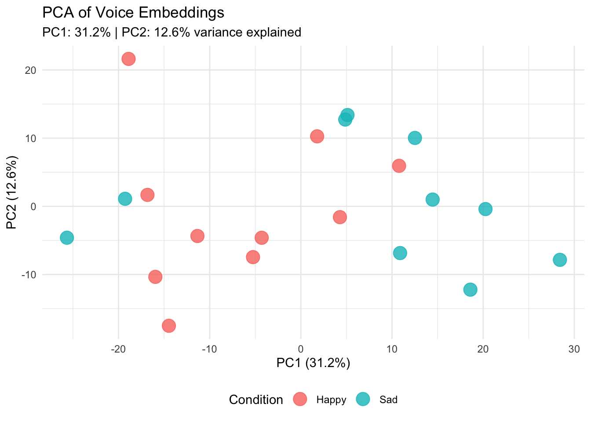
library(Rtsne)
library(tidyverse)
# 1. Prepare numeric matrix (removing grouping)
tsne_input <- reshape_attempt |>
ungroup() |>
select(starts_with("Dim")) |>
as.matrix()
# 2. Run t-SNE
# Note: With only 20 observations, perplexity must be low (typically < N/3).
# We'll use perplexity = 5.
set.seed(777) # For reproducibility
tsne_out <- Rtsne(tsne_input,
perplexity = 5,
dims = 2,
check_duplicates = FALSE)
# 3. Create plotting dataframe
tsne_df <- as_tibble(tsne_out$Y) |>
rename(tsne1 = V1, tsne2 = V2) |>
bind_cols(reshape_attempt |> select(condition))Warning: The `x` argument of `as_tibble.matrix()` must have unique column names if
`.name_repair` is omitted as of tibble 2.0.0.
ℹ Using compatibility `.name_repair`.# 4. Visualize
ggplot(tsne_df, aes(x = tsne1, y = tsne2, color = condition)) +
geom_point(size = 5, alpha = 0.8) +
theme_minimal() +
labs(
title = "t-SNE of Voice Embeddings",
subtitle = "Perplexity = 5 (adjusted for small N)",
x = "t-SNE 1",
y = "t-SNE 2",
color = "Condition"
) +
theme(legend.position = "bottom")
Voice Agents (STT -> LLM -> TTS)
A conversational AI voice agent links three components: \[\text{Audio Input} \xrightarrow{\text{STT}} \text{Text Transcript} \xrightarrow{\text{LLM}} \text{Text Response} \xrightarrow{\text{TTS}} \text{Audio Output}\] The field has shifted very rapidly and I generally recommend using any of the tools below. The marginal utility to take an existing huggingface implementation is declining sharply as you have full flexibility with any of the following tools. When developing sophisticated conversational agents like the one shown below, I recommend simply using tools like Claude Code, OpenAI Codex, Google Antigravity, or Google’s AI Studio to accelerate your prototyping and implementation. I will demonstrate a simple implementation in class and outline areas that require careful attention when you use such tools for “vibe coding” (e.g., data storage, privacy, etc.)

Day 5: Evaluation & Your Capstone Projects
Learning goals
By the end of Day 5, participants can:
- evaluate voice analytics claims across signal, feature, model, system, and human levels;
- position voice measures in experimental designs;
- present their capstone project idea and receive actionable feedback;
- refine and finalize their capstone report.
Voice in experimental designs
How do you intend to study voice in your project?
- dependent variable: how a participant sounds after a manipulation;
- independent variable: agent voice style, accent, speed, warmth, or confidence;
- mediator: voice features explain treatment effects on downstream behavior;
- moderator: speaker or agent voice changes treatment effectiveness;
- manipulation check: acoustic/linguistic evidence that the intended voice style occurred;
- data collection interface: the agent conducts an interview or task.
Design check
For your capstone, label the role of voice in the causal design. If there is no causal design, label the prediction or measurement design.
A simple evaluation framework:
- Signal: Is the audio usable and comparable?
- Measure: Are features reliable and theoretically linked?
- Model: Does the model generalize, calibrate, and avoid leakage?
- System: Does the agent work robustly, safely, and with acceptable latency (if you happen to use agents for data collection)?
- Human: Does the study respect participant privacy with clear consent?
Capstone Report Outline
- Research question and theory: why voice analytics or a voice agent is needed.
- Design: participants, recording/agent context, procedure, and consent.
- Measurement pipeline: preprocessing, features, transcripts, embeddings, or logs.
- Analysis/evaluation: model, validation, robustness, and fairness checks.
- Contribution and limitations: what the voice component adds and what remains uncertain.
Course Summary & Key Takeaways
- Voice is a rich behavioral data layer — the how, not just the what.
- A principled pipeline (collect → preprocess → extract → model → evaluate) makes it tractable and reproducible.
- Theory-driven feature mapping beats kitchen-sink extraction.
- Conversational agents turn voice from a data source into a research instrument.
- Validity, fairness and open, ethical practice are part of the method.
Further Resources
- Hildebrand, Efthymiou,Busquet, Hampton, Hoffman & Novak (2020), Voice analytics in business research: Conceptual foundations, acoustic feature extraction, and applications, Journal of Business Research.
- Busquet, Efthymiou & Hildebrand (2023), Voice analytics in the wild: Validity and predictive accuracy of common audio-recording devices, Behavior Research Methods.
- Busquet & Hildebrand (2023), voiceR package (CRAN).
- Jurafsky & Martin, Speech and Language Processing (3rd ed.).
- Main Packages:
seewave,tuneR,soundgen,phonTools,voiceR,openai,reticulate,googleLanguageR,text,talk.
Session info
sessionInfo()R version 4.6.0 (2026-04-24)
Platform: aarch64-apple-darwin23
Running under: macOS Sequoia 15.1.1
Matrix products: default
BLAS: /Library/Frameworks/R.framework/Versions/4.6/Resources/lib/libRblas.0.dylib
LAPACK: /Library/Frameworks/R.framework/Versions/4.6/Resources/lib/libRlapack.dylib; LAPACK version 3.12.1
locale:
[1] en_US.UTF-8/en_US.UTF-8/en_US.UTF-8/C/en_US.UTF-8/en_US.UTF-8
time zone: Europe/Vienna
tzcode source: internal
attached base packages:
[1] parallel stats graphics grDevices utils datasets methods
[8] base
other attached packages:
[1] Rtsne_0.17 doParallel_1.0.17 iterators_1.0.14
[4] foreach_1.5.2 talk_0.30 text_1.9
[7] reticulate_1.46.0 pROC_1.19.0.1 caret_7.0-1
[10] lattice_0.22-9 data.table_1.18.4 lubridate_1.9.5
[13] forcats_1.0.1 stringr_1.6.0 dplyr_1.2.1
[16] purrr_1.2.2 readr_2.2.0 tidyr_1.3.2
[19] tibble_3.3.1 ggplot2_4.0.3 tidyverse_2.0.0
[22] googleLanguageR_0.3.1.1 openai_0.4.1 voiceR_0.1.0
[25] phonTools_0.2-2.2 soundgen_2.9.0 seewave_2.2.4
[28] tuneR_1.4.7
loaded via a namespace (and not attached):
[1] splines_4.6.0 later_1.4.8 cellranger_1.1.0
[4] polyclip_1.10-7 hardhat_1.4.3 rpart_4.1.27
[7] lifecycle_1.0.5 rstatix_0.7.3 globals_0.19.1
[10] MASS_7.3-65 backports_1.5.1 magrittr_2.0.5
[13] plotly_4.12.0 sass_0.4.10 rmarkdown_2.31
[16] jquerylib_0.1.4 yaml_2.3.12 httpuv_1.6.17
[19] otel_0.2.0 gld_2.6.8 cowplot_1.2.0
[22] RColorBrewer_1.1-3 multcomp_1.4-30 abind_1.4-8
[25] expm_1.0-0 nnet_7.3-20 TH.data_1.1-5
[28] tweenr_2.0.3 sandwich_3.1-1 ipred_0.9-15
[31] lava_1.9.1 listenv_0.10.1 nortest_1.0-4
[34] parallelly_1.47.0 ggwordcloud_0.6.2 svglite_2.2.2
[37] codetools_0.2-20 coin_1.4-3 DT_0.34.0
[40] xml2_1.5.2 ggforce_0.5.0 tidyselect_1.2.1
[43] farver_2.1.2 matrixStats_1.5.0 stats4_4.6.0
[46] base64enc_0.1-6 jsonlite_2.0.0 e1071_1.7-17
[49] Formula_1.2-5 survival_3.8-6 systemfonts_1.3.2
[52] signal_1.8-1 tools_4.6.0 DescTools_0.99.60
[55] Rcpp_1.1.1-1.1 glue_1.8.1 prodlim_2026.03.11
[58] gridExtra_2.3 xfun_0.58 RcppProgress_0.4.2
[61] ggthemes_5.2.0 withr_3.0.2 fastmap_1.2.0
[64] boot_1.3-32 shinyjs_2.1.1 digest_0.6.39
[67] timechange_0.4.0 R6_2.6.1 mime_0.13
[70] colorspace_2.1-2 textshaping_1.0.5 textmineR_3.0.6
[73] utf8_1.2.6 generics_0.1.4 recipes_1.3.3
[76] class_7.3-23 stopwords_2.3 quanteda_4.4
[79] httr_1.4.8 htmlwidgets_1.6.4 ModelMetrics_1.2.2.2
[82] pkgconfig_2.0.3 gtable_0.3.6 Exact_3.3
[85] dials_1.4.3 parsnip_1.6.0 timeDate_4052.112
[88] modeltools_0.2-24 lmtest_0.9-40 S7_0.2.2
[91] workflows_1.3.0 furrr_0.4.0 htmltools_0.5.9
[94] carData_3.0-6 multcompView_0.1-11 scales_1.4.0
[97] kableExtra_1.4.0 lmom_3.3 png_0.1-9
[100] gower_1.0.2 knitr_1.51 rstudioapi_0.18.0
[103] tzdb_0.5.0 reshape2_1.4.5 curl_7.1.0
[106] nlme_3.1-169 proxy_0.4-29 cachem_1.1.0
[109] zoo_1.8-15 rsample_1.3.2 rootSolve_1.8.2.4
[112] libcoin_1.0-13 pillar_1.11.1 grid_4.6.0
[115] vctrs_0.7.3 tune_2.1.0 promises_1.5.0
[118] ggpubr_0.6.3 car_3.1-5 shinyFiles_0.9.3
[121] xtable_1.8-8 yardstick_1.4.0 evaluate_1.0.5
[124] phia_0.3-2 mvtnorm_1.4-1 cli_3.6.6
[127] compiler_4.6.0 rlang_1.2.0 future.apply_1.20.2
[130] ggsignif_0.6.4 labeling_0.4.3 plyr_1.8.9
[133] fs_2.1.0 stringi_1.8.7 topics_1.0
[136] viridisLite_0.4.3 assertthat_0.2.1 lazyeval_0.2.3
[139] rcompanion_2.5.2 Matrix_1.7-5 patchwork_1.3.2
[142] hms_1.1.4 future_1.70.0 shiny_1.13.0
[145] haven_2.5.5 googleAuthR_2.0.2.1 gridtext_0.1.6
[148] gargle_1.6.1 FSA_0.10.1 broom_1.0.13
[151] memoise_2.0.1 bslib_0.11.0 fastmatch_1.1-8
[154] readxl_1.5.0 DiceDesign_1.10